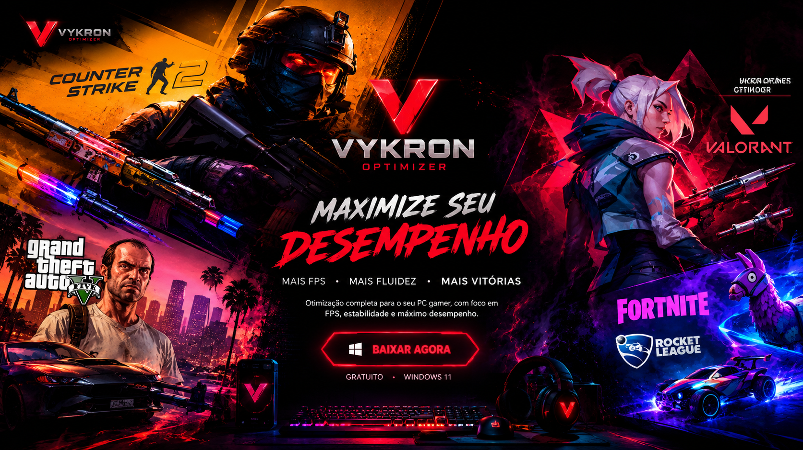
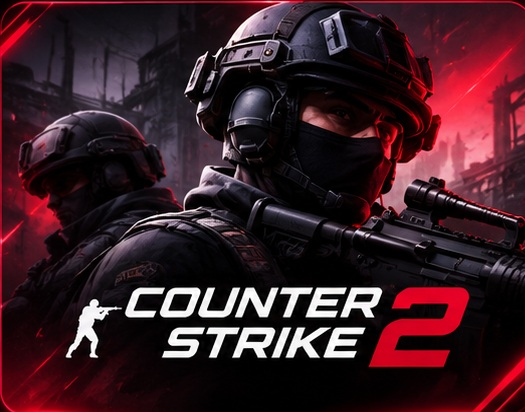
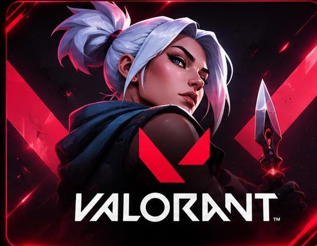

Smart Optimization
Gerenciamento de ajustes opcionais do Windows, com foco em controle e reversibilidade.
SYSTEM CONTROL
O Vykron Optimizer centraliza diagnóstico de hardware, monitoramento, gerenciamento de processos e ajustes opcionais do Windows em uma interface gamer.
Mais informações para decidir o que realmente vale a pena ajustar.
Ferramentas para analisar, monitorar e administrar o desempenho do computador. Alguns recursos ainda estão em validação.
Gerenciamento de ajustes opcionais do Windows, com foco em controle e reversibilidade.
SYSTEM CONTROLFerramentas experimentais de medição de FPS e frametime para comparar sessões.
EXPERIMENTALInformações de CPU, GPU, RAM, armazenamento e sensores disponíveis.
HARDWARE DATAClassificação assistida de processos opcionais e confirmação antes de encerrar.
PROCESS CONTROLAnálise de arquivos temporários e opções de limpeza com revisão.
STORAGE TOOLSRecursos de restauração para alterações registradas e compatíveis.
RESTORE OPTIONSGerenciamento de configurações opcionais relacionadas a jogos.
GAMING TOOLSDiagnósticos e comparações baseadas nos dados coletados.
DATA ANALYSISMonitoramento experimental durante jogos compatíveis, sujeito a validação.
LIVE MONITORINGPlataforma, módulos e estado atual do projeto.
OPTIMIZER · RED EDITION
Um fluxo de análise para compreender o computador antes de aplicar ajustes.
Consulte o hardware, os recursos e os processos em execução.
Revise e aplique apenas os ajustes opcionais adequados ao seu computador.
Use medições disponíveis para comparar o comportamento antes e depois.
Jogos que inspiram o desenvolvimento do Vykron. Ganhos de FPS dependem do hardware e das configurações.


Vykron Optimizer — diagnóstico, monitoramento e ferramentas de desempenho em uma interface gamer.
↓ BAIXAR VYKRON OPTIMIZER VER VERSÕES PUBLICADAS NO GITHUB